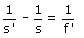

Acomodación del ojo Esencialmente el ojo consiste en una lente convergente (Cristalino) y una pantalla a distancia fija de esta (Retina). Para que se pueda ver un objeto su imagen deberá formarse en la retina Ecuación del cristalino:  En esta ecuación s' siempre será la distancia del cristalino a la retina (Tamaño del globo ocular), entonces: ¿cómo es que vemos objetos a diferentes distancias? ¿cómo puede ser s' siempre la misma si cambiamos s? El truco del ojo es que f' no es constante. Hay músculos que comban el cristalino modificando su distancia focal. Cuando queremos ver un objeto cambia de forma automática la f' para que su imagen se forme en la retina (Este proceso se denomina 'acomodación del ojo) En un ojo normal la imagen de objetos lejanos se forma en la retina sin necesidad de acomodar. Cuando se miren objetos cada vez más cercanos el ojo se irá acomodando (Combará el cristalino para modificar su distancia focal de forma que la imagen del objeto se forme en la retina) |